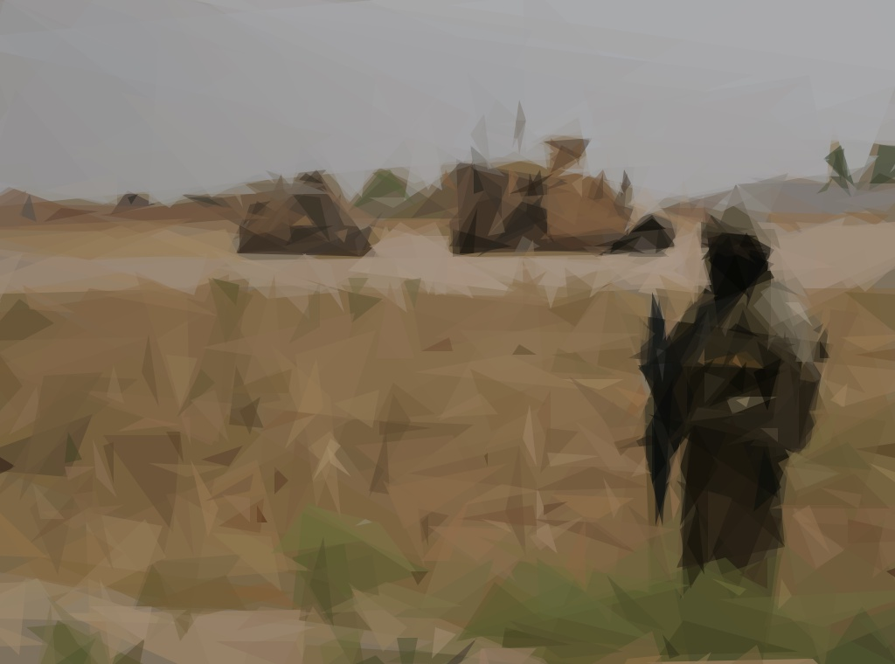
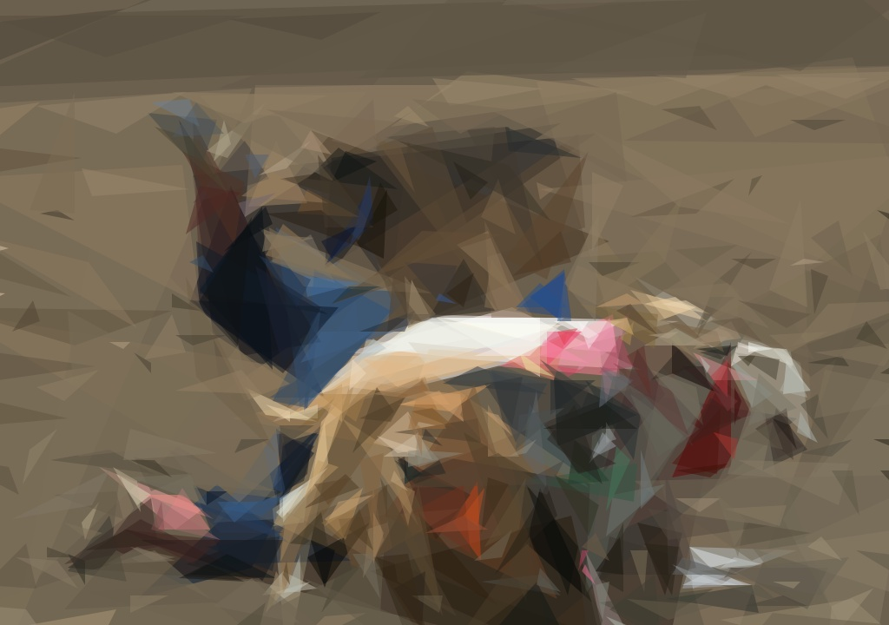
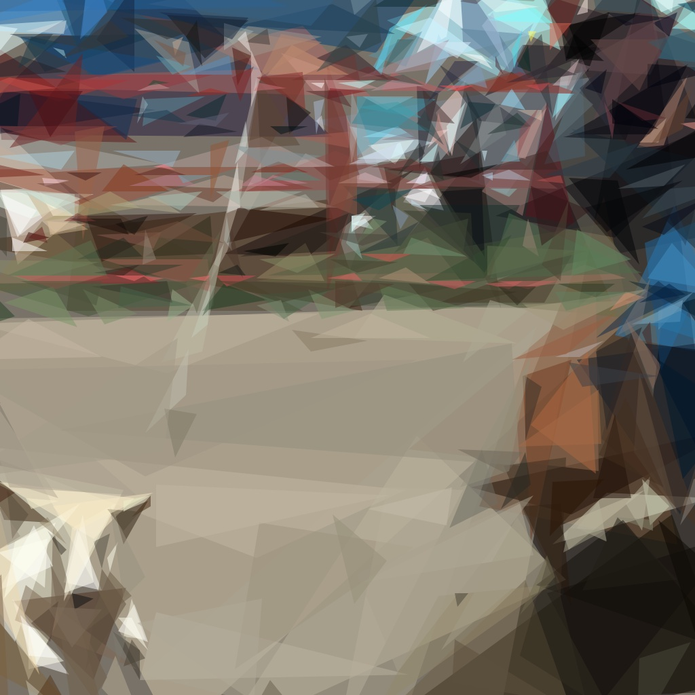
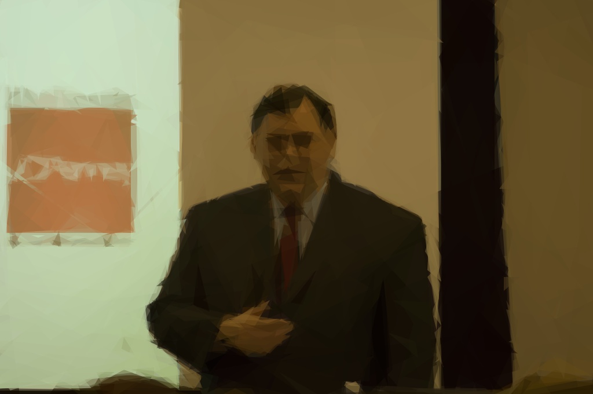
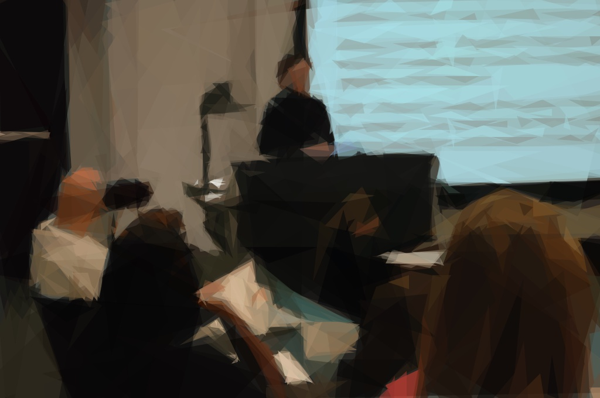

A Tale of Two Cities
There were a king with a large jaw and a queen with a plain face, on the throne of England; there were a king with a large jaw and a queen with a fair face, on the throne of France. In both countries it was clearer than crystal to the lords of the State preserves of loaves and fishes, that things in general were settled for ever.
It was the year of Our Lord one thousand seven hundred and seventy-five. Spiritual revelations were conceded to England at that favoured period, as at this. Mrs. Southcott had recently attained her five-and-twentieth blessed birthday, of whom a prophetic private in the Life Guards had heralded the sublime appearance by announcing that arrangements were made for the swallowing up of London and Westminster. Even the Cock-lane ghost had been laid only a round dozen of years, after rapping out its messages, as the spirits of this very year last past (supernaturally deficient in originality) rapped out theirs. Mere messages in the earthly order of events had lately come to the English Crown and People, from a congress of British subjects in America: which, strange to relate, have proved more important to the human race than any communications yet received through any of the chickens of the Cock-lane brood.
France, less favored on the whole as to matters spiritual than her sister of the shield and trident, rolled with exceeding smoothness down hill, making paper money and spending it. Under the guidance of her Christian pastors, she entertained herself, besides, with such humane achievements as sentencing a youth to have his hands cut off, his tongue torn out with pincers, and his body burned alive, because he had not kneeled down in the rain to do honour to a dirty procession of monks which passed within his view, at a distance of some fifty or sixty yards. It is likely enough that, rooted in the woods of France and Norway, there were growing trees, when that sufferer was put to death, already marked by the Woodman, Fate, to come down and be sawn into boards, to make a certain movable framework with a sack and a knife in it, terrible in history. It is likely enough that in the rough outhouses of some tillers of the heavy lands adjacent to Paris, there were sheltered from the weather that very day, rude carts, bespattered with rustic mire, snuffed about by pigs, and roosted in by poultry, which the Farmer, Death, had already set apart to be his tumbrils of the Revolution. But that Woodman and that Farmer, though they work unceasingly, work silently, and no one heard them as they went about with muffled tread: the rather, forasmuch as to entertain any suspicion that they were awake, was to be atheistical and traitorous.
In England, there was scarcely an amount of order and protection to justify much national boasting. Daring burglaries by armed men, and highway robberies, took place in the capital itself every night; families were publicly cautioned not to go out of town without removing their furniture to upholsterers’ warehouses for security; the highwayman in the dark was a City tradesman in the light, and, being recognised and challenged by his fellow-tradesman whom he stopped in his character of "the Captain," gallantly shot him through the head and rode away; the mail was waylaid by seven robbers, and the guard shot three dead, and then got shot dead himself by the other four, "in consequence of the failure of his ammunition:" after which the mail was robbed in peace; that magnificent potentate, the Lord Mayor of London, was made to stand and deliver on Turnham Green, by one highwayman, who despoiled the illustrious creature in sight of all his retinue; prisoners in London gaols fought battles with their turnkeys, and the majesty of the law fired blunderbusses in among them, loaded with rounds of shot and ball; thieves snipped off diamond crosses from the necks of noble lords at Court drawing-rooms; musketeers went into St. Giles’s, to search for contraband goods, and the mob fired on the musketeers, and the musketeers fired on the mob, and nobody thought any of these occurrences much out of the common way. In the midst of them, the hangman, ever busy and ever worse than useless, was in constant requisition; now, stringing up long rows of miscellaneous criminals; now, hanging a housebreaker on Saturday who had been taken on Tuesday; now, burning people in the hand at Newgate by the dozen, and now burning pamphlets at the door of Westminster Hall; to-day, taking the life of an atrocious murderer, and to-morrow of a wretched pilferer who had robbed a farmer’s boy of sixpence.
All these things, and a thousand like them, came to pass in and close upon the dear old year one thousand seven hundred and seventy-five. Environed by them, while the Woodman and the Farmer worked unheeded, those two of the large jaws, and those other two of the plain and the fair faces, trod with stir enough, and carried their divine rights with a high hand. Thus did the year one thousand seven hundred and seventy-five conduct their Greatnesses, and myriads of small creatures--the creatures of this chronicle among the rest--along the roads that lay before them.
II. The Mail
It was the Dover road that lay, on a Friday night late in November, before the first of the persons with whom this history has business. The Dover road lay, as to him, beyond the Dover mail, as it lumbered up Shooter’s Hill. He walked up hill in the mire by the side of the mail, as the rest of the passengers did; not because they had the least relish for walking exercise, under the circumstances, but because the hill, and the harness, and the mud, and the mail, were all so heavy, that the horses had three times already come to a stop, besides once drawing the coach across the road, with the mutinous intent of taking it back to Blackheath. Reins and whip and coachman and guard, however, in combination, had read that article of war which forbade a purpose otherwise strongly in favour of the argument, that some brute animals are endued with Reason; and the team had capitulated and returned to their duty.
With drooping heads and tremulous tails, they mashed their way through the thick mud, floundering and stumbling between whiles, as if they were falling to pieces at the larger joints. As often as the driver rested them and brought them to a stand, with a wary "Wo-ho! so-ho-then!" the near leader violently shook his head and everything upon it--like an unusually emphatic horse, denying that the coach could be got up the hill. Whenever the leader made this rattle, the passenger started, as a nervous passenger might, and was disturbed in mind.
There was a steaming mist in all the hollows, and it had roamed in its forlornness up the hill, like an evil spirit, seeking rest and finding none. A clammy and intensely cold mist, it made its slow way through the air in ripples that visibly followed and overspread one another, as the waves of an unwholesome sea might do. It was dense enough to shut out everything from the light of the coach-lamps but these its own workings, and a few yards of road; and the reek of the labouring horses steamed into it, as if they had made it all.
Two other passengers, besides the one, were plodding up the hill by the side of the mail. All three were wrapped to the cheekbones and over the ears, and wore jack-boots. Not one of the three could have said, from anything he saw, what either of the other two was like; and each was hidden under almost as many wrappers from the eyes of the mind, as from the eyes of the body, of his two companions. In those days, travellers were very shy of being confidential on a short notice, for anybody on the road might be a robber or in league with robbers. As to the latter, when every posting-house and ale-house could produce somebody in "the Captain’s" pay, ranging from the landlord to the lowest stable non-descript, it was the likeliest thing upon the cards. So the guard of the Dover mail thought to himself, that Friday night in November, one thousand seven hundred and seventy-five, lumbering up Shooter’s Hill, as he stood on his own particular perch behind the mail, beating his feet, and keeping an eye and a hand on the arm-chest before him, where a loaded blunderbuss lay at the top of six or eight loaded horse-pistols, deposited on a substratum of cutlass.
The Dover mail was in its usual genial position that the guard suspected the passengers, the passengers suspected one another and the guard, they all suspected everybody else, and the coachman was sure of nothing but the horses; as to which cattle he could with a clear conscience have taken his oath on the two Testaments that they were not fit for the journey.
"Wo-ho!" said the coachman. "So, then! One more pull and you’re at the top and be damned to you, for I have had trouble enough to get you to it!--Joe!"
"Halloa!" the guard replied.
"What o’clock do you make it, Joe?"
"Ten minutes, good, past eleven."
"My blood!" ejaculated the vexed coachman, "and not atop of Shooter’s yet! Tst! Yah! Get on with you!"
The emphatic horse, cut short by the whip in a most decided negative, made a decided scramble for it, and the three other horses followed suit. Once more, the Dover mail struggled on, with the jack-boots of its passengers squashing along by its side. They had stopped when the coach stopped, and they kept close company with it. If any one of the three had had the hardihood to propose to another to walk on a little ahead into the mist and darkness, he would have put himself in a fair way of getting shot instantly as a highwayman.
The last burst carried the mail to the summit of the hill. The horses stopped to breathe again, and the guard got down to skid the wheel for the descent, and open the coach-door to let the passengers in.
"Tst! Joe!" cried the coachman in a warning voice, looking down from his box.
"What do you say, Tom?"
They both listened.
"I say a horse at a canter coming up, Joe."
"_I_ say a horse at a gallop, Tom," returned the guard, leaving his hold of the door, and mounting nimbly to his place. "Gentlemen! In the king’s name, all of you!"
With this hurried adjuration, he cocked his blunderbuss, and stood on the offensive.
The passenger booked by this history, was on the coach-step, getting in; the two other passengers were close behind him, and about to follow. He remained on the step, half in the coach and half out of; they remained in the road below him. They all looked from the coachman to the guard, and from the guard to the coachman, and listened. The coachman looked back and the guard looked back, and even the emphatic leader pricked up his ears and looked back, without contradicting.
The stillness consequent on the cessation of the rumbling and labouring of the coach, added to the stillness of the night, made it very quiet indeed. The panting of the horses communicated a tremulous motion to the coach, as if it were in a state of agitation. The hearts of the passengers beat loud enough perhaps to be heard; but at any rate, the quiet pause was audibly expressive of people out of breath, and holding the breath, and having the pulses quickened by expectation.
The sound of a horse at a gallop came fast and furiously up the hill.

"So-ho!" the guard sang out, as loud as he could roar. "Yo there! Stand! I shall fire!"
The pace was suddenly checked, and, with much splashing and floundering, a man’s voice called from the mist, "Is that the Dover mail?"
"Never you mind what it is!" the guard retorted. "What are you?"
"_Is_ that the Dover mail?"
"Why do you want to know?"
"I want a passenger, if it is."
"What passenger?"
"Mr. Jarvis Lorry."
Our booked passenger showed in a moment that it was his name. The guard, the coachman, and the two other passengers eyed him distrustfully.
"Keep where you are," the guard called to the voice in the mist, "because, if I should make a mistake, it could never be set right in your lifetime. Gentleman of the name of Lorry answer straight."
"What is the matter?" asked the passenger, then, with mildly quavering speech. "Who wants me? Is it Jerry?"
("I don’t like Jerry’s voice, if it is Jerry," growled the guard to himself. "He’s hoarser than suits me, is Jerry.")
"Yes, Mr. Lorry."
"What is the matter?"
"A despatch sent after you from over yonder. T. and Co."
"I know this messenger, guard," said Mr. Lorry, getting down into the road--assisted from behind more swiftly than politely by the other two passengers, who immediately scrambled into the coach, shut the door, and pulled up the window. "He may come close; there’s nothing wrong."
"I hope there ain’t, but I can’t make so ‘Nation sure of that," said the guard, in gruff soliloquy. "Hallo you!"
"Well! And hallo you!" said Jerry, more hoarsely than before.
"Come on at a footpace! d’ye mind me? And if you’ve got holsters to that saddle o’ yourn, don’t let me see your hand go nigh ‘em. For I’m a devil at a quick mistake, and when I make one it takes the form of Lead. So now let’s look at you."
The figures of a horse and rider came slowly through the eddying mist, and came to the side of the mail, where the passenger stood. The rider stooped, and, casting up his eyes at the guard, handed the passenger a small folded paper. The rider’s horse was blown, and both horse and rider were covered with mud, from the hoofs of the horse to the hat of the man.
"Guard!" said the passenger, in a tone of quiet business confidence.
The watchful guard, with his right hand at the stock of his raised blunderbuss, his left at the barrel, and his eye on the horseman, answered curtly, "Sir."
"There is nothing to apprehend. I belong to Tellson’s Bank. You must know Tellson’s Bank in London. I am going to Paris on business. A crown to drink. I may read this?"
"If so be as you’re quick, sir."
He opened it in the light of the coach-lamp on that side, and read--first to himself and then aloud: "‘Wait at Dover for Mam’selle.’ It’s not long, you see, guard. Jerry, say that my answer was, RECALLED TO LIFE."
Jerry started in his saddle. "That’s a Blazing strange answer, too," said he, at his hoarsest.
"Take that message back, and they will know that I received this, as well as if I wrote. Make the best of your way. Good night."
With those words the passenger opened the coach-door and got in; not at all assisted by his fellow-passengers, who had expeditiously secreted their watches and purses in their boots, and were now making a general pretence of being asleep. With no more definite purpose than to escape the hazard of originating any other kind of action.
The coach lumbered on again, with heavier wreaths of mist closing round it as it began the descent. The guard soon replaced his blunderbuss in his arm-chest, and, having looked to the rest of its contents, and having looked to the supplementary pistols that he wore in his belt, looked to a smaller chest beneath his seat, in which there were a few smith’s tools, a couple of torches, and a tinder-box. For he was furnished with that completeness that if the coach-lamps had been blown and stormed out, which did occasionally happen, he had only to shut himself up inside, keep the flint and steel sparks well off the straw, and get a light with tolerable safety and ease (if he were lucky) in five minutes.
"Tom!" softly over the coach roof.
"Hallo, Joe."
"Did you hear the message?"
"I did, Joe."
"What did you make of it, Tom?"
"Nothing at all, Joe."
"That’s a coincidence, too," the guard mused, "for I made the same of it myself."
Jerry, left alone in the mist and darkness, dismounted meanwhile, not only to ease his spent horse, but to wipe the mud from his face, and shake the wet out of his hat-brim, which might be capable of holding about half a gallon. After standing with the bridle over his heavily-splashed arm, until the wheels of the mail were no longer within hearing and the night was quite still again, he turned to walk down the hill.
"After that there gallop from Temple Bar, old lady, I won’t trust your fore-legs till I get you on the level," said this hoarse messenger, glancing at his mare. "‘Recalled to life.’ That’s a Blazing strange message. Much of that wouldn’t do for you, Jerry! I say, Jerry! You’d be in a Blazing bad way, if recalling to life was to come into fashion, Jerry!"